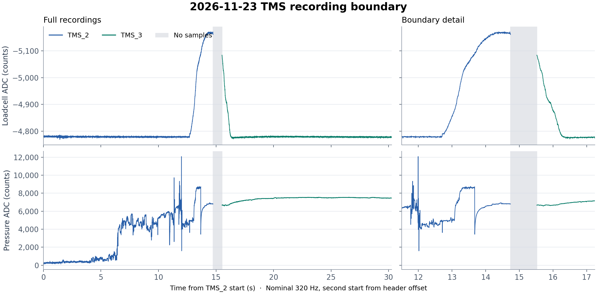

2026-11-23 Static Fire Test
TMS_2 ended while the loadcell signal was elevated. TMS_3 starts under load and captures the return toward the pre-rise baseline.
Recording boundary
The loadcell began to rise 12.76 s after TMS_2 started on the nominal 320 Hz time axis. Each file contains 4,717 complete sample pairs. The 15.51954 s spacing between sampling starts agrees with the firmware's 15 s recording window.
The traces support a late force rise followed by a scheduled recording end. Samples between the files are absent. Pressure changed before the force rise, and the records contain no ignition-command timestamp, so command-to-ignition delay is unknown.

Observed values
| TMS_2 observed peak and last filtered force | 149.17 N / 146.30 N |
|---|---|
| TMS_2 observed peak pressure | 23.281 bar relative to the initial baseline |
| Full burn duration, average thrust, total impulse | Undetermined |
TMS_2 first crossed the 5 N threshold at 12.77 s. Force was still above both the 3% and 5 N thresholds at the end of that recording, so its pipeline burn metrics are provisional. Both pressure channels pass the pipeline's ADC checks. The converted data use inherited calibration.